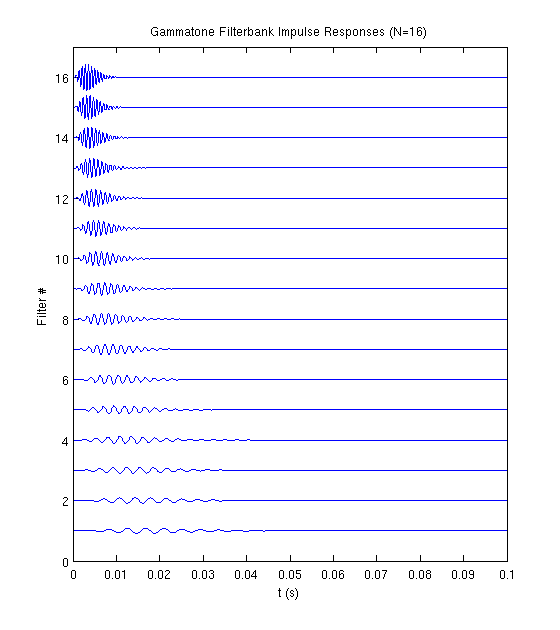
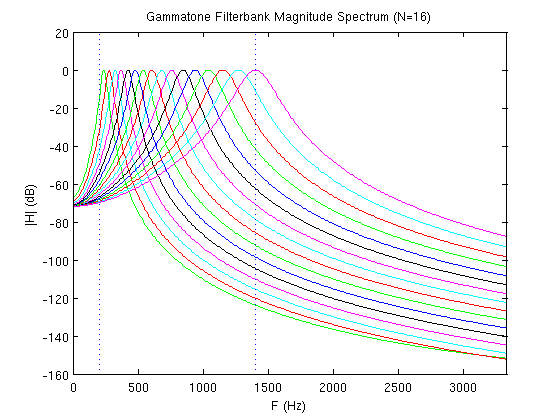

Generate and Display a Gammatone Filter Bank
Generate the filter bank:
dt = 1e-5; t = [0:dt:0.1]; N = 16; h = make_gammatone_fb(t,N);
Magnify the impulse responses a bit so that they are visible when plotted:
fig_count = 0;
Plot the impulse responses:
figure(); for i=[1:N], plot(t,i+h(i,:)*100,'LineWidth',1.5); hold on; end axis([min(t) max(t) 0 N+1]); pos = get(gcf,'Position'); set(gcf,'Position',[pos(1),pos(2)-pos(2)/2,pos(3),pos(4)*1.5]); title(sprintf('Gammatone Filterbank Impulse Responses (N=%i)',N)); xlabel('t (s)'); ylabel('Filter #'); N_fft = length(t); H = fft(h,N_fft,2); fs = 1/dt; f = (fs/2)*linspace(0,1,N_fft/2+1); if_max = floor(N_fft/30)+1;
Plot the spectrum:
figure(); colors = ['b','g','r','c','m','k']; for i=[1:N], c = colors(mod(i,length(colors))+1); plot(f(1:if_max),20*log10(abs(H(i,1:if_max))),c); hold on; end plot([200 200], ylim,':'); plot([1400 1400], ylim,':'); xlim([f(1) f(if_max)]); title(sprintf('Gammatone Filterbank Magnitude Spectrum (N=%i)',N)); xlabel('F (Hz)'); ylabel('|H| (dB)');
Plot the support:
figure(); plot(f(1:if_max),20*log10(sum(abs(H(:,1:if_max).^2)))); hold on; plot([200 200], ylim,':'); plot([1400 1400], ylim,':'); xlim([f(1) f(if_max)]); title(sprintf('Gammatone Filterbank Support (N=%i)',N)); xlabel('F (Hz)'); ylabel('$\mathsf{\sum|H^i(f)|^2}$','Interpreter','latex');

Author: Lev Givon
Copyright 2009-2012 Lev Givon